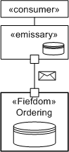
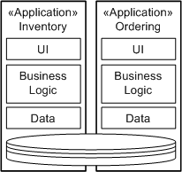

| Рекомендация: Service Data Encapsulation |
 |
|
| Связанные элементы |
|---|
IntroductionIt has been common practice in both object-oriented and component-based development to have a set of components representing persistent entities residing in a shared database. In fact, it was often a vision of many IT organizations to have a single database schema containing all the persistent elements used in the enterprise. While this has had limited success for some organizations, for many of them, the common enterprise schema has not been developed. There are many reasons why such an approach fails, many of them non-technical, but relating to multiple applications; accessing, locking, and changing the same shared data are very difficult issues to resolve across organizational boundaries. In this guideline, we will address two concerns that are very much related: the notion that a service should be a complete encapsulation of the data it requires and that the only sharing of information between services be conducted via message exchange. This guideline provides additional detail to the topic of data-driven service identification. Services as FiefdomsOne of the terms most often used when describing the notion of object-oriented development is the notion of encapsulation, that an object should encapsulate its state (private data) and its implementation logic. In a services world, we cleanly separate the notion of a Artifact: Service (implementation) from its Artifact: Service Specification. This section will address the need for encapsulation of state. This concept has been documented, initially in [HELLAND] and more recently in [SESSIONS] and was focused on the development of autonomous, therefore more easily evolvable systems.  The commonly used analogy [HELLAND] is that in applying for new insurance you tend to use an agent. The agent is responsible for helping you fill out the forms for application and usually does this with access to data for types of policies kinds and rates. The insurance agent is acting as the emissary on behalf of the insurance company's fiefdom. In fact the insurance company may only accept policy applications from an approved agent. The fiefdom is responsible for distributing up-to-date policy, rate, and form information to agents as well as processing applications. However, even though the fiefdom has provided the policy information to the agent and the agent has been certified by the fiefdom, the first thing the insurance company does with the application is validate it completely - the fiefdom still does not trust the emissary. The following sections outline the role of the two primary elements in more detail. While this is not presented as a concrete pattern or as a prescriptive approach, the principles embodied are important in considering service-oriented solutions. Role of the FiefdomThe fiefdom is an autonomous service; it only allows communication via messages that are generally assumed to be created by emissaries who act on behalf of the consumer. The fiefdom is secure, autonomous, and completely defines a data boundary. No data sources or other persistent data is shared between fiefdoms or between fiefdoms and other software elements. Now, it is possible that a single database server may underpin more than one service for persistence, but different table spaces or database containers for each fiefdom ensure data integrity, security, and so on. Another key aspect of the pattern is that to ensure that the emissary can act as a reasonable agent, that it can interact with the consumer with the minimum of required communication with the fiefdom, and that the fiefdom will distribute copies of certain reference data to the emissaries for them to store and use locally. So in the insurance example above, the catalog of available policies, their requirements, restrictions and prices is distributed periodically to agents. Of course, it is important that the agent be able to use this information, but also that they understand that this information is a copy of the data and not necessarily the data the fiefdom is using, and that the information may be out of date. It may be updated once per month and if the update is received, the emissary may not be able to process new applications or it may process them based on the older data. As mentioned above, the fact that an emissary acts on behalf of a fiefdom does not imply any form of trust relationship between the two parties. To ensure that the emissary has not been usurped, all messages will be validated for syntax, semantics and policy before being accepted. The detailed responsibilities of the fiefdom are:
Role of the EmissaryThe emissary acts as an agent and may be located as a per-consumer component, an Internet-based component, or a specifically deployed component, but critically it has the characteristics that it manages the reference data required to fill out messages sent the fiefdom processes. It is also responsible for managing local copies of per-transaction messages. So, for example, customers may identify themselves as having an existing policy, this can be looked up by the emissary first to pre-populate the form with some information, and this copy of the existing policy can be cached by the emissary for the duration of the application completion transaction. In general, an emissary is used when the communication between fiefdom and consumer represents some more complex transaction that the emissary is now able to manage more efficiently, such as filling out complex requests, as in the current example. This pattern can be seen in many organizations today where the order-fulfillment system that processes orders and schedules them for delivery is often the same system that has been in place for many years. As these organizations have started selling products interactively over the Web, the web application acts as an emissary that has a local copy of the product catalog and helps the customer prepare an order. Of course it is not the web application that processes the order; it submits the orders to the existing system. Because the emissary completes this order based on reference data, it is reasonable to expect that the order will not be rejected because it is not correct. On the other hand, as we said above, the existing order system is going to validate the order before accepting it. The detailed responsibilities of the emissary are:
Service Data BoundariesIn general, many applications are developed as vertically integrated sets of components (see the concept Service-Oriented Architecture for more information). This tends to lead to applications that have few natural integration points. The most common approach for integration, mainly because it sounds so easy, is to have two or more applications share a common data store. So, where Inventory and Ordering share the notion of a "Product," they are accessing the same tables in the database. This leads to a number of potential concurrency and performance issues and interrelations that now couple these applications that affect their individual evolution and the ability of the business to rehost, redevelop, or simply change one of the applications.  For development of service-oriented solutions, we recommend that a service manage a specific, bounded, and coherent data model. So, analysis of the usage of the two applications shown above should identify the usage of the data by them and how it can be separated to be managed by two autonomous services. This is not to say that there are no interconnections between the data models as they are separated. For example, both the Inventory and Ordering services will need a common definition of products and also locations where inventory is stored and where orders are sourced. Approaches to dealing with this are to either create a third service for the shared concept (here, a product catalog service would be relevant) or to manage the concept in just one of the new services. For example, location would logically be managed by Inventory. Now, messages sent to and from one of these services will need to contain the identifier for the shared elements so they can be queried or retrieved if needed. For example, in the case of the inventory, a query for the products currently managed by a location would return a list of product identifiers (and one assumes quantities on hand); if the details of the products are required, this would be retrieved from the product catalog service. Obviously a key work product in the analysis of the data boundaries is the Data Model. Data models will need to be created for the existing database and carefully separated out at the physical data model or preferably at the logical data model. Service Messages as Data ViewsIf all data is stored only within the service and access is denied to all outside the service, all communication has to be through messages identified in the Service Specification. However, it is always important to note that these messages, because they are representing a query and return of data from the database to the consumer, are specifically copies of data held by the service. As such, they may actually represent a stale state of the service. For example, by querying for the quantity on-hand of product "234," a message is returned identifying that location "562" has a quantity of "12." The operation will fail, though, if another consumer takes eight items from the stock and the original consumer tries to acquire 12 items. This is, in effect, issues of design and traditional transaction management; managing the scope and boundaries of transactions made a little more complex or at least more visible due to the loosely coupled nature of services and service consumers. Therefore, messages not only have to be considered as views of the data, but also as copies of data. Some guidance has been written in a number of places including SOA to relate how messages can specifically identify their lifetime and applicability. Another effect of this transformation to the messaging-based approach inherent to service-oriented solutions is that we can now refocus the idea of a common data model for applications into a common message model for integration. What this means is that, wherever possible, messages defined for service specifications are based on common structures, possibly separated into cohesive schema that can be reused across services. This is a far more flexible approach to integration in that it also matches the loose coupling approach of services themselves. Also, most of the technologies used in service implementation include either technologies, tools, or runtimes that provide message-transformation capabilities where message schema do not exactly match. For more information, specifically on message leasing and caching, see the Task: Message Design. References[HELLAND] Fiefdoms and Emissaries, Pat Helland, Microsoft. [SESSIONS] Software Fortresses: Modeling Enterprise Architectures, Roger Sessions, Addison Wesley, 2003. |
© Copyright IBM Corp. 1987, 2006. Все права защищены.. |